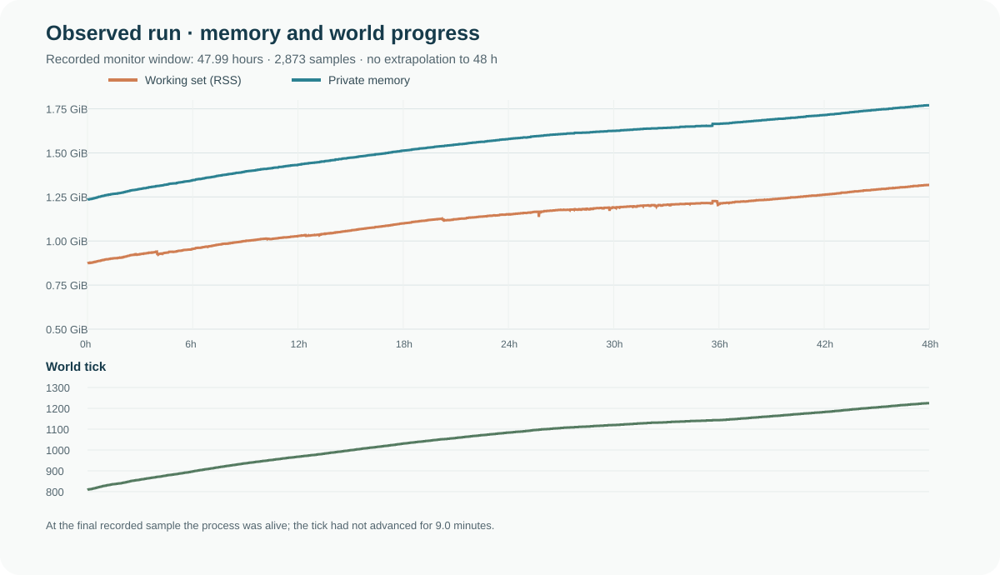

In 30 seconds. The project connects states, relationships, and dynamics in a shared causal world: materials and resources, bodies and locomotion, perception, memory, decisions, and collective organization. It includes a theoretical program broader than the active software, an experimental runtime, traceability instruments, and several product surfaces. The engine and implementation recipes remain private; this dossier describes capabilities and results with their actual scope.
The engine at a glanceFrom local causes to effects across domains.
Events carry identifiers and causal links; versioned checkpoints support state recovery and replay comparison under tested conditions. Campaigns combine integrated sequences, ablations, calibration, and post-mortem diagnostics.
The theoretical framework catalogs 11 formulations, five cascade questions, and a map of 23 scales. These have different research statuses; this does not mean all 23 scales are simulated or all 11 formulations validated.
See the detailed program map →

The project’s contributionFollow a cause through the consequences it changes.
Specialized domains share one world while keeping their local rules. The runtime makes their interactions inspectable in a causal history, then supports resuming and comparing branches to examine how a mechanism affects what follows.
Demonstrations cover connections that have actually been built and tested. The framework is designed for extensible composition; automatic integration of every third-party model is not claimed. Detailed contracts and recipes remain private.
Access and timing contracts record which states and events components can use and how their updates are paced. Across 44 phases and 71 components, the inventory classifies 49 reference-step updates, 17 elapsed-time updates, and 5 mixed regimes. Of the 32 without direct global dt, 2 remain without direct dt: one lagged anatomy projection and one discrete fabrication stage, neither a direct rate. Three mechanisms now receive elapsed time under rate assumptions that have not been calibrated; one also retains a discrete threshold division. This inventory does not certify physical synchronization.
 The world loop
The world loopCreate. Inhabit. Discover.
The idea is to connect a place, its objects, resources, and inhabitants in a shared story—and make that story understandable.
01 · IMAGINE✳
Shape a place
Compose spaces, objects, and the starting conditions for a story.
02 · EXPLORE⌂
Watch it take shape
Inhabitants encounter resources, constraints, and interactions.
03 · UNDERSTAND↗
Follow what changes
Explore recorded events and see how the world evolves.
The visionA world is more than a backdrop.
Places, objects, needs, and relationships can influence one another. The project explores how these mechanisms meet in a shared story—and how someone can then change it.
Several features have been developed separately
The complete, continuous experience is still in development. Reported results describe specific scenarios and their limits.
 Results at several scales
Results at several scalesIntegrated loops, domain checks, and long campaigns.
These observations do not all measure the same thing. Some test one mechanism; others follow several domains over time or measure the cost of instrumentation.
LINKED BEHAVIOR↻
Experience changes an action
Across multiple initializations of a garden scenario, a retained trace contributes to a route and a later irrigation action. Matched branches without that contribution do not produce the same action.
INTEGRATED WORLD◎
Consequences accumulate
An approximately two-hour subsistence campaign followed memory, movement, resources, and group organization. One branch dissolved at step 1,855 of 2,160; the post-mortem linked part of the failure to movement blockage and resource access.
DOMAIN CHECKS⌁
Specialized controls
Completed batches include 122/122 numerical physics checks, 31/31 domestic hydrology checks, 11/11 engine coordination checks, and 192/192 checks in a body, perception, and memory batch. Other campaigns cover locomotion, optics, ecology, and hearing.
MEASURED LOAD▤
Instrumentation has a cost
The integrated campaign reached nearly 3.8 GiB RAM and exceeded one million events in its most heavily instrumented branch. This describes that scenario and log, not the engine’s maximum capacity.
Inspectable resource time seriesOne process monitored for 47.99 hours.
The filtered record contains 2,873 samples and records 416 net ticks (809 to 1225); resident memory ranged from 0.87 to 1.32 GiB. The process was alive at every sample, which only means it had not exited.
Progress: no tick advanced during the final 9.0 minutes of the monitored window. The public world-output CSV contains 6 spaced snapshots (ticks 1, 809, 900, 1000, 1225, 1274); its final record comes from a separate trace without timestamps aligned to the monitor.
The monitored window reached 47.99 h, approximately 50 seconds short of 48 h. The strict threshold is not fully documented; the separate trace reaches tick 1274 but cannot establish the missing duration.

Choose a language and depthStart with the short edition, or go deeper.
Download the complete English dossier as PDF · Read online · Markdown
5 PAGES · ENGLISHShort edition
The product vision, main features, observed results, and known limits, in a few minutes.
Read online · Markdown
6 PAGES · FRANÇAISPrésentation courte
La vision produit, les fonctions principales, les résultats et leurs limites.
Lire en ligne · Read online
FULL TECHNICAL DOSSIER · ENGLISHDetailed edition
The complete technical dossier, translated into English, with the scope and limitations of the current project.
Read online · Markdown · PDF
Read the English executive summary →
Proprietary project. The engine and implementation recipes remain private. This repository contains public documentation and presentation diagrams. It is a project overview, not a software release. Overlapping test campaigns are not added into one total.